Calculatrice interdite : tous les calculs se font à la main. Le site fonctionne sur ordinateur, tablette et téléphone.
1
Pour commencer
Bien démarrer
Le site
Depuis la page d'accueil, deux grandes entrées :
Cahiers de calcul : les fiches de calcul, rangées par niveau (Seconde, Première, Terminale) puis par cahier. Chaque cahier a son ⌂ Sommaire.
Automatismes : les séries de questions à choix multiple (QCM) pour préparer la première partie de l'épreuve anticipée de mathématiques de Première.
En haut à droite, l'icône de profil sert à se connecter puis à se déconnecter.
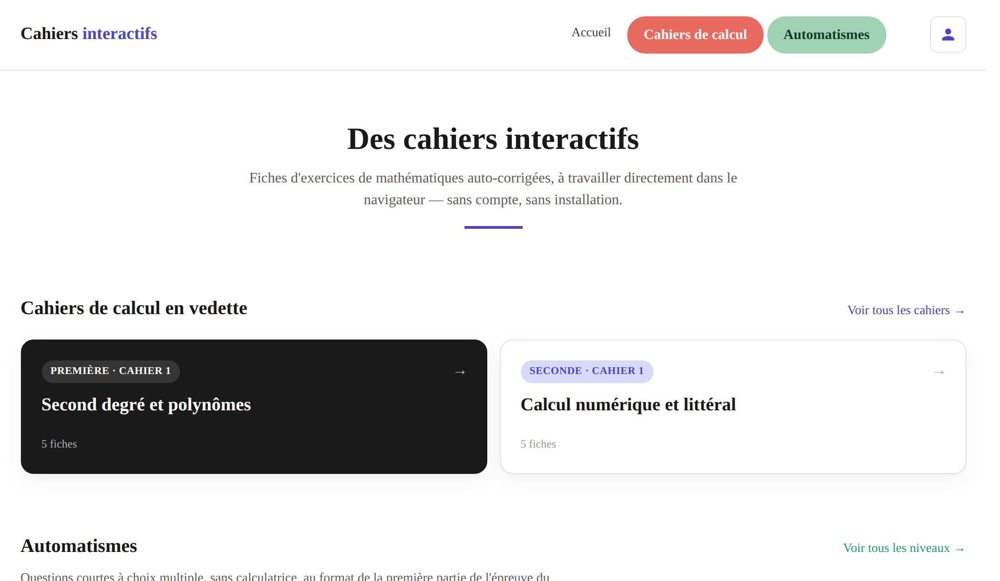
La page d'accueil du site.
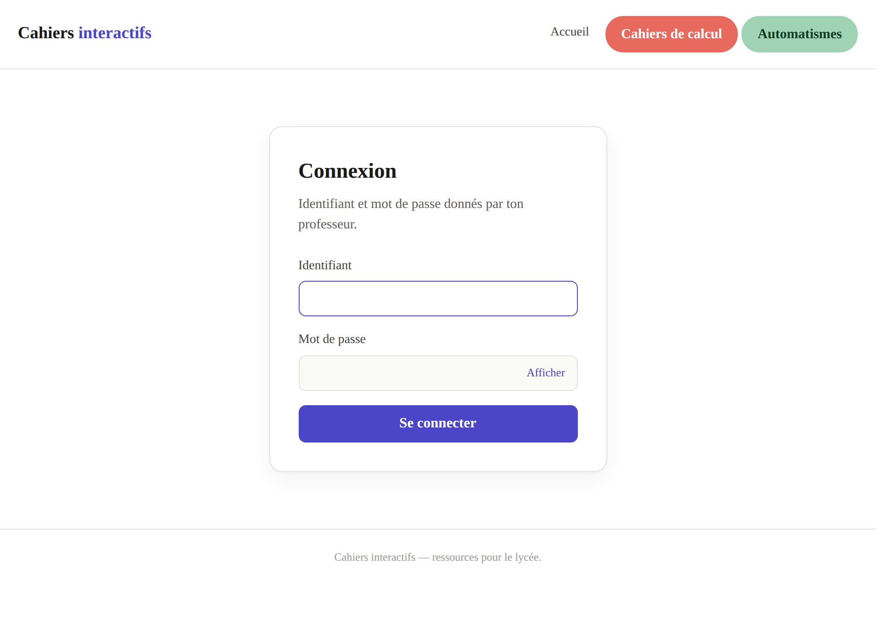
La page de connexion.
Se connecter
Clique sur l'icône de profil, en haut à droite.
Tape l'identifiant et le mot de passe donnés par ton professeur (le bouton Afficher montre ce que tu tapes).
Clique sur Se connecter.
Pour te déconnecter, clique de nouveau sur l'icône de profil : son info-bulle indique « Se déconnecter » suivi de ton identifiant.
⚠ Poste partagé (CDI, salle info, ordinateur familial)
La connexion reste ouverte tant que tu ne te déconnectes pas, même si tu fermes la page. Pense à te déconnecter avant de partir.
Connecté ou pas : qu'est-ce qui change ?
Sans connexion
Toutes les fiches et tous les automatismes sont utilisables librement. Rien n'est enregistré.
Connecté, hors devoir
Exactement pareil : tu t'entraînes librement, avec la correction immédiate. Rien n'est envoyé au professeur.
Connecté, en devoir
Seul le travail fait dans le cadre d'un devoir est suivi par ton professeur. Voir les pages 9 et 10.
✓ Bon réflexe
Le site s'utilise sur ordinateur, tablette ou téléphone. Sur ordinateur, le clavier physique est le plus rapide ; sur tablette et téléphone, utilise les claviers intégrés aux fiches (page 5).
Cahiers interactifs — Guide de l'élève2
2
Fiches de calcul · 1/4
La page d'une fiche
En autonomie
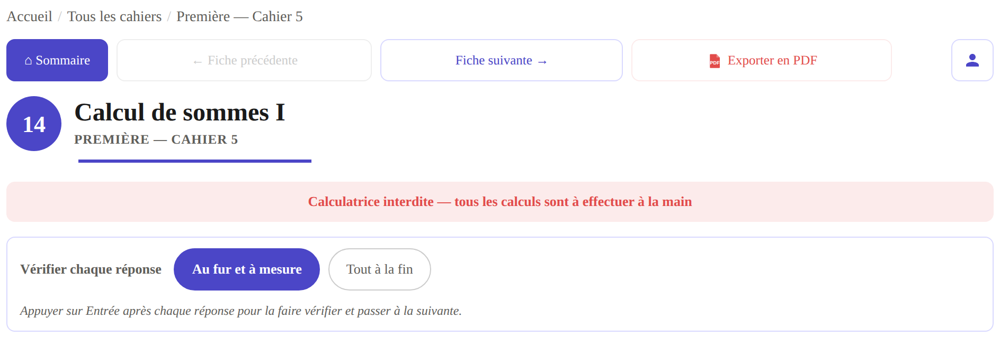
Le haut d'une fiche : navigation, titre, rappel « calculatrice interdite » et choix du mode de vérification.
La barre de navigation
⌂ Sommaire
Revenir à la liste des fiches du cahier.
← Fiche précédente Fiche suivante →
Passer directement à la fiche voisine (grisé s'il n'y en a pas).
Exporter en PDF
Imprimer ou enregistrer la fiche vierge (sans tes réponses) pour la faire sur papier.
La même barre se trouve aussi tout en bas de la fiche.
Vérifier chaque réponse
Avant de commencer, choisis comment tu veux être corrigé :
Au fur et à mesure
Chaque réponse est corrigée dès que tu appuies sur Entrée, puis le curseur passe à la question suivante. C'est le mode par défaut.
Tout à la fin
Entrée passe à la question suivante sans corriger. Tu corriges tout d'un coup à la fin avec le bouton Corrigé des erreurs, en bas de la fiche. Idéal pour s'entraîner comme en contrôle.
Comment une fiche est organisée
Quelques automatismes
Le premier bloc, sur fond bleuté : six questions variées (inéquations, équations, calcul numérique) à réussir rapidement.
Le cœur de la fiche
Les calculs du chapitre, regroupés par thème. Chaque Calcul a son titre, et ses questions a), b), c)…
Calculs plus avancés
Le dernier bloc, sur fond gris : des calculs nettement plus difficiles, pour aller plus loin.
Dans un titre, la partie écrite en bleu foncé impose la forme de la réponse (« sous forme de fraction irréductible », « sous la forme d'un intervalle »…) : elle est vérifiée.
Les pictogrammes à droite des titres
Ils indiquent le temps à prévoir pour chaque calcul, selon sa longueur et sa technicité : plus il y a de pictogrammes foncés, plus il faut de temps. Leur forme dit dans quelle partie de la fiche on se trouve :
des bateaux pour les calculs généraux (les automatismes),
des horloges pour la partie principale,
des roues crantées pour les calculs plus avancés.
Cahiers interactifs — Guide de l'élève3
2
Fiches de calcul · 2/4
Répondre et se faire aider
En autonomie
Répondre à une question
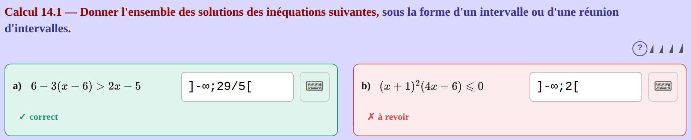
En mode « au fur et à mesure » : une réponse juste devient verte, une réponse fausse devient rouge.
Clique dans la case « réponse » et tape ta réponse (au clavier, ou avec le clavier ⌨ de la question : page 5).
Appuie sur Entrée : la réponse est vérifiée (✓ correct ou ✗ à revoir) et le curseur saute à la question suivante.
Une réponse rouge ? Corrige-la directement dans la case et appuie de nouveau sur Entrée.
Le bouton d'aide ?
À droite du titre d'un calcul, le ? explique comment écrire la réponse attendue (format, symboles, exemples). Il ne donne jamais la méthode ni le résultat. Avant que tu tapes, le texte gris de la case montre aussi un modèle : ]a;b[ pour un intervalle, « réponse » sinon.
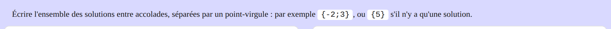
Exemple : l'aide d'un calcul où l'on donne un ensemble de solutions.
Pourquoi ma réponse est-elle refusée ?
La forme est imposée : 4/6 est refusé si l'on demande une fraction irréductible (2/3), un calcul non effectué aussi (12-7 au lieu de 5).
Le format n'est pas le bon : un intervalle s'écrit avec des crochets, un ensemble avec des accolades. Clique sur ?.
Une solution manque dans un ensemble ou une réunion d'intervalles.
Sinon, toute écriture équivalente est acceptée : 2x+1 ou 1+2x, 1,5 ou 3/2 (quand aucune forme n'est imposée).
✓ Lis bien le titre du calcul
La partie écrite en bleu foncé dans le titre (« sous forme de fraction irréductible », « sous la forme d'un intervalle »…) est la forme attendue : c'est la première chose à vérifier quand une réponse juste est refusée.
✓ Les nombres changent à chaque fois
Chaque fiche est générée au hasard : deux élèves n'ont pas les mêmes nombres, et tu peux refaire une fiche autant de fois que tu veux avec de nouvelles valeurs (bouton Générer une nouvelle version, page 6).
Cahiers interactifs — Guide de l'élève4
2
Fiches de calcul · 3/4
Les claviers
Ordinateur, tablette, téléphone
À droite de chaque case, le bouton ⌨ ouvre (ou ferme) un clavier avec tous les symboles utiles. Il en existe deux, selon la question. Sur ordinateur, tu peux aussi tout taper avec ton clavier habituel.
Le clavier simplifié
Il s'ouvre juste sous la question, pour les réponses écrites en texte : intervalles, ensembles de solutions, couples…
les chiffres et la virgule
les opérations+−×÷ et les parenthèses
x², x³, xⁿ, la racine √ et la fraction a/b (elle place des cases ▢ à compléter)
selon la question : les crochets, +∞, −∞, la réunion ∪, ℝ, l'ensemble vide ∅, les accolades{ } et le point-virgule ;
Effacer vide la case, ← Suppr. efface le dernier caractère.
En bas du clavier, une astuce rappelle le format attendu.
Sur tablette et téléphone
Une touche ✓ Valider apparaît en haut du clavier simplifié : elle remplace la touche Entrée (vérifier et passer à la question suivante).
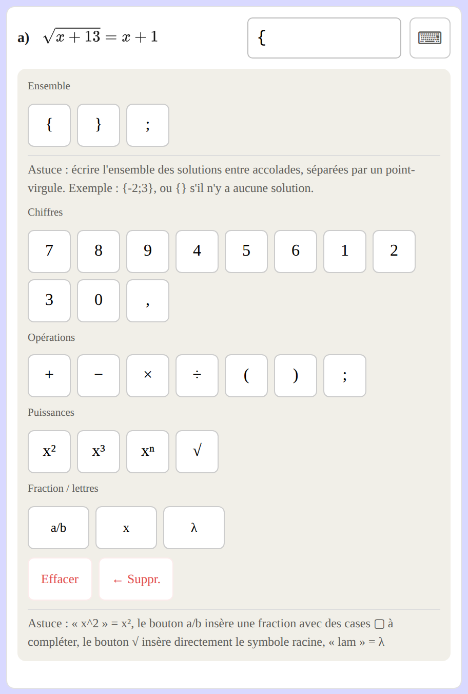
Le clavier simplifié d'une équation.
Le clavier mathématique
Pour les autres réponses (expressions, fractions, racines…), la case est une case « mathématique » : ce que tu tapes s'affiche directement comme une formule. Son clavier s'ouvre en bas de l'écran, avec des onglets : 123 (chiffres et opérations), ∞≠∈ (symboles), abc (lettres), αβγ (lettres grecques), et des touches pour le carré, les puissances, la racine carrée, les accolades… La touche ↵ valide la réponse, comme Entrée.
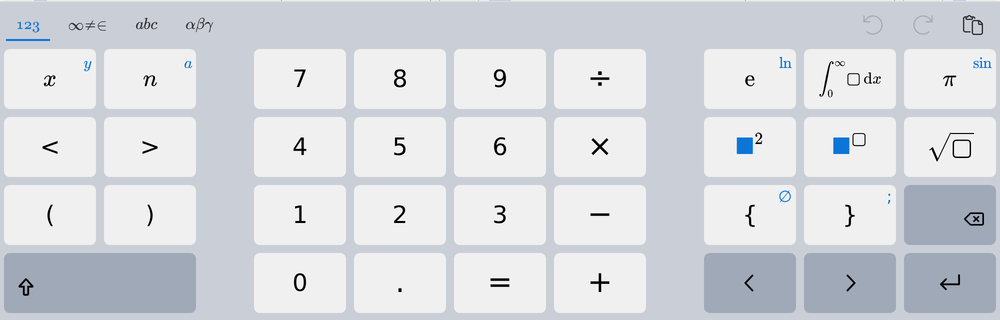
Le clavier mathématique, ouvert en bas de l'écran.
Taper vite dans une case mathématique (au clavier de l'ordinateur)
/ crée une fraction · ^ met en exposant · sqrt écrit une racine √ · pi écrit π · les flèches ←→ permettent de sortir d'une fraction, d'un exposant ou d'une racine.
Cahiers interactifs — Guide de l'élève5
2
Fiches de calcul · 4/4
Les boutons du bas de page
En autonomie
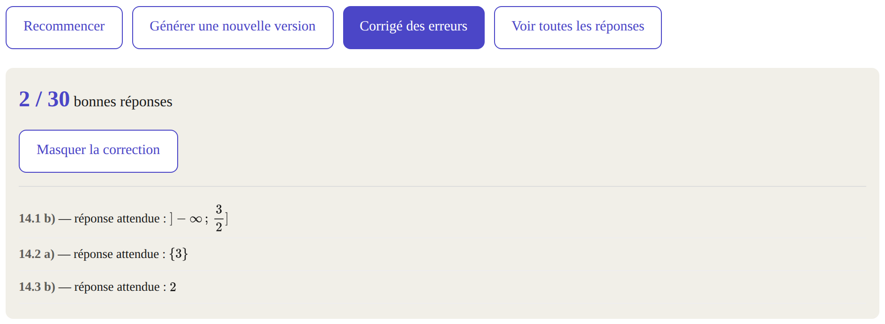
En bas de la fiche, après un clic sur « Corrigé des erreurs » puis sur « Voir la correction des erreurs ».
Bouton
Ce qu'il fait
Recommencer
Efface toutes tes réponses mais garde les mêmes énoncés : pour refaire la même fiche sans regarder.
Générer une nouvelle version
Crée une nouvelle fiche du même type, avec d'autres nombres. Tes réponses actuelles sont effacées.
Corrigé des erreurs
Corrige toutes les réponses d'un coup et affiche ton score (par exemple « 2 / 30 bonnes réponses »). Le bouton Voir la correction des erreurs affiche alors la réponse attendue pour chaque question fausse (un second clic sur Masquer la correction la cache). Les questions laissées vides ne sont pas listées.
Voir toutes les réponses
Affiche la liste complète des réponses de la fiche, question par question. Un second clic (Masquer toutes les réponses) la cache.
Une bonne méthode de travail
Fais la fiche en entier, au brouillon puis dans les cases, sans regarder les réponses.
Corrige-toi : au fur et à mesure, ou avec Corrigé des erreurs.
Reprends chaque erreur avant de regarder la réponse attendue : souvent, c'est une étourderie ou une forme non respectée.
Refais une nouvelle version quelques jours plus tard pour vérifier que c'est acquis.
⚠ En entraînement libre, rien n'est enregistré
Si tu fermes la page ou cliques sur un autre lien, tes réponses sont perdues. Le bouton Enregistrer mon avancement n'apparaît que pour un devoir (page 10).
Cahiers interactifs — Guide de l'élève6
3
Automatismes · 1/2
Fiches d'automatismes
QCM · 10 questions
Trois façons de s'entraîner
Dans Automatismes → Première :
Travailler un thème précis : pourcentages, calcul numérique, développer et factoriser, lectures graphiques… 10 questions sur ce seul thème.
Fiche d'automatismes : deux thèmes tirés au sort, 10 questions.
Sujet blanc : 10 questions sur tout le programme, comme le jour de l'épreuve anticipée de Première.
Chaque question propose quatre réponses (a, b, c, d) : une seule est juste. Sans calculatrice.
Le niveau de difficulté
★ Niveau 1
Les bases : une seule étape de calcul, des nombres simples.
★★ Niveau 2
Le niveau de l'épreuve anticipée de Première : questions calquées sur les sujets officiels.
★★★ Niveau 3
Bien plus difficile : plusieurs étapes, des pièges.
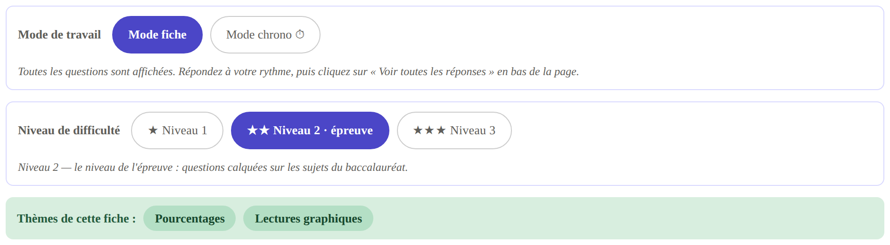
En haut de la page : le mode de travail, le niveau, et les thèmes de la série.
Le mode fiche
Les 10 questions sont affichées en même temps : tu réponds dans l'ordre que tu veux, à ton rythme.
Clique sur une réponse pour la choisir (elle se colore en bleu). Tu peux changer d'avis tant que la correction n'est pas affichée.
Quand tu as tout fait, clique sur Voir toutes les réponses : chaque carte devient verte ou rouge, avec la bonne réponse et une explication. Ton score s'affiche dès que tu as répondu à toutes les questions.
Les figures ont une petite loupe en haut à droite : clique dessus pour l'agrandir (Échap pour fermer).
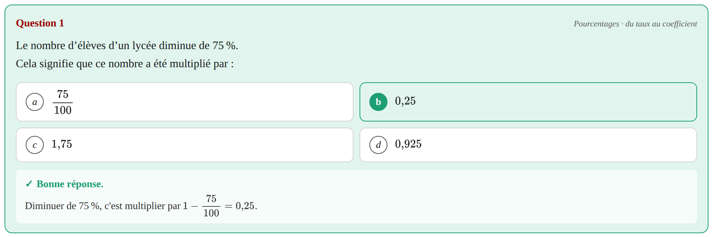
Une question corrigée, avec son explication.
Les boutons du bas de page
Voir toutes les réponses
Corrige la série et affiche les explications. Devient Masquer les réponses.
Recommencer
Efface tes choix et refait la même série.
Nouvelle fiche (mêmes thèmes)
Nouvelles questions sur les mêmes thèmes (fiche à deux thèmes).
Nouvelle fiche / Nouveau sujet blanc
Nouvelle série complète (autres thèmes, ou autre sujet blanc).
Cahiers interactifs — Guide de l'élève7
3
Automatismes · 2/2
Le mode chrono ⏱
Épreuve anticipée
Le principe
Clique sur Mode chrono ⏱ : une seule question à l'écran, avec un minuteur, et la correction seulement à la fin. C'est le meilleur entraînement pour l'épreuve anticipée de Première.
Avant de démarrer, choisis le niveau et le temps par question : 1 min, 1 min 30, 2 min (recommandé), 3 min ou sans limite. Puis clique sur Démarrer.
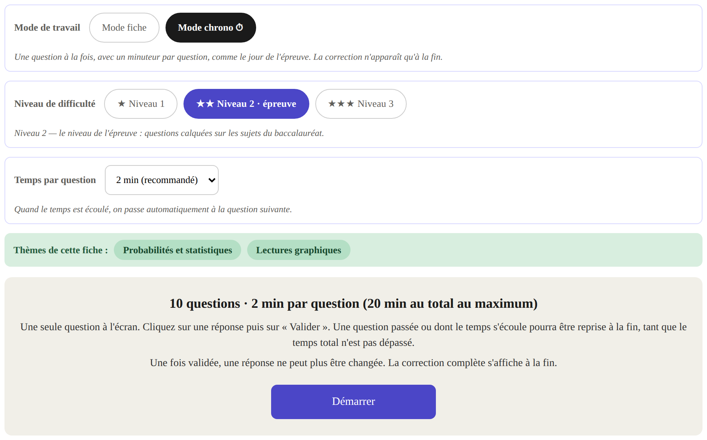
L'écran avant le départ.
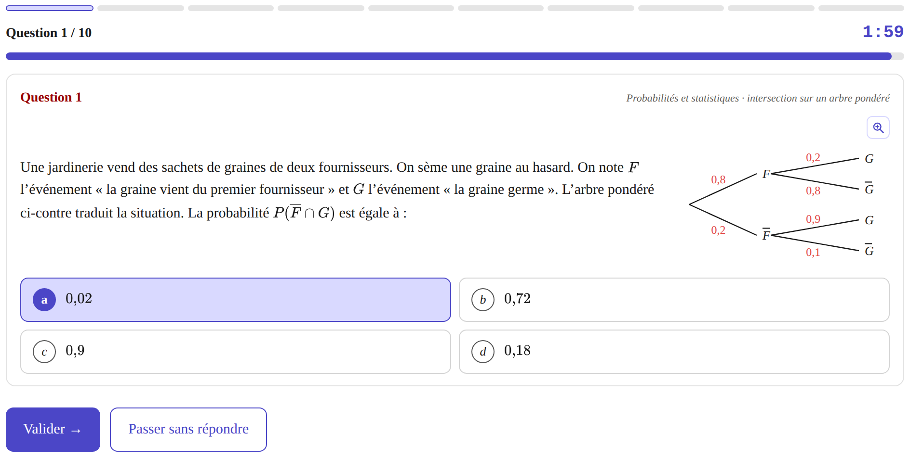
Pendant la série : la barre de progression, le numéro de la question, le temps restant.
Pendant la série
Clique sur une réponse, puis sur Valider →. Une réponse validée ne peut plus être changée.
Passer sans répondre met la question de côté.
Quand le temps d'une question est écoulé, on passe automatiquement à la suivante.
En haut, la barre de progression montre les questions faites et la question en cours.
À la fin de la série
S'il reste des questions sans réponse et du temps, tu peux cliquer sur Reprendre les questions sans réponse. Le chrono continue de tourner sur cet écran.
Terminer le sujet arrête la série et affiche ton score et ton temps total.
Voir la correction détaillée affiche chaque question avec la bonne réponse et l'explication.
✓ Conseil pour l'épreuve anticipée de Première
Fais d'abord toutes les questions qui te semblent rapides en passant les autres, puis reviens sur celles que tu as passées. C'est exactement ce que permet le bouton « Reprendre les questions sans réponse ».
Mode fiche ou mode chrono ?
Le mode fiche pour apprendre (on prend son temps, on lit les explications), le mode chrono pour se tester dans les conditions de l'épreuve anticipée de Première. Tu peux passer de l'un à l'autre à tout moment en haut de la page.
Cahiers interactifs — Guide de l'élève8
4
Devoirs · 1/2
Trouver ses devoirs
Connexion obligatoire
Qu'est-ce qu'un devoir ?
Ton professeur peut te donner une fiche de calcul, une fiche d'automatismes ou un sujet blanc à faire avant une date limite (l'échéance), avec un nombre de tentatives autorisées. Seul le travail fait dans le cadre d'un devoir est transmis à ton professeur : c'est ta meilleure note obtenue avant l'échéance qui est retenue.
Devoirs2
Le bloc « Devoirs »
Une fois connecté, si ton professeur t'a donné des devoirs, ce bloc apparaît sur les pages d'accueil du site. La pastille rouge compte les devoirs encore à rendre (à faire et enregistrés). Clique dessus pour ouvrir la page Mes devoirs.
La page « Mes devoirs »
Tes devoirs y sont rangés en trois colonnes. Clique sur un devoir à faire ou enregistré pour l'ouvrir directement.
À faire
SommesÀ rendre avant le 10/10 18:00 — 3 tentatives restantes
Pas encore commencé, ou déjà rendu avec des tentatives restantes (ta meilleure note s'affiche).
Enregistrés
Sujet blanc n°2Enregistré le 05/10 17:42 — à terminer et valider avant le 12/10 18:00
Commencé et enregistré, mais pas encore validé : il ne compte pas encore !
Faits
Produits24 / 31 — 2 tentatives
Tentatives épuisées ou échéance passée : ta meilleure note est retenue (« Non rendu » si aucune validation).
Exemple d'illustration : les titres, dates et notes dépendent de tes devoirs.
Le parcours d'un devoir
1
J'ouvredepuis le bloc « Devoirs » ou la page Mes devoirs
2
Je travaillesans correction ; je peux enregistrer et reprendre plus tard
3
Je validec'est ce qui compte une tentative et envoie ma note
✓
Je me corrigenote, correction, et nouvelle tentative si je veux
★ La règle d'or
Un devoir n'est rendu que lorsque tu as cliqué sur Valider ma fiche (ou Valider ma série, ou Terminer le sujet en mode chrono) avant l'échéance. Enregistrer ne suffit pas.
Cahiers interactifs — Guide de l'élève9
4
Devoirs · 2/2
Enregistrer, valider, recommencer
Connexion obligatoire
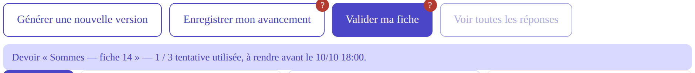
Une fiche de calcul ouverte en devoir : les boutons changent, et un bandeau rappelle le devoir, les tentatives utilisées et l'échéance.
Pendant le devoir
Aucune correction n'apparaît : les cases ne deviennent ni vertes ni rouges, et Voir toutes les réponses est grisé. Entrée passe simplement à la question suivante.
Le choix du mode, Recommencer et Corrigé des erreurs disparaissent.
Les petites bulles ? sur les boutons rappellent leur rôle (survole-les).
Enregistrer son avancement
Le bouton Enregistrer mon avancement sauvegarde ta fiche exactement telle qu'elle est (mêmes nombres, réponses déjà tapées). Tu la retrouves en rouvrant le devoir, même sur un autre appareil : « Brouillon repris depuis ta dernière sauvegarde ». Enregistrer ne compte pas de tentative et ne rend pas le devoir.
Valider sa fiche
Au clic sur Valider ma fiche, une fenêtre te demande de confirmer, en te disant combien de tentatives il te restera :
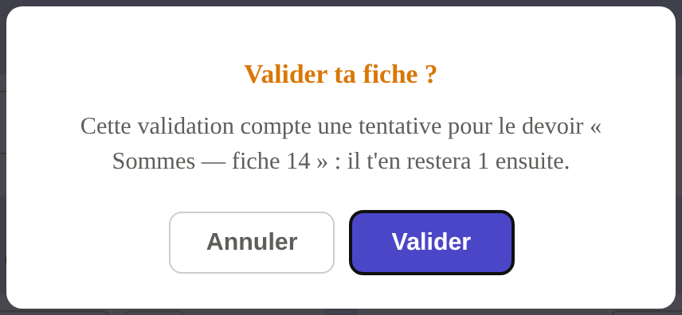
Après confirmation : la tentative est comptée, ta note s'affiche avec la correction des erreurs, et Voir toutes les réponses se débloque. Valider ma fiche se grise : on ne valide pas deux fois la même fiche.
Une nouvelle tentative
Pour améliorer ta note, clique sur Générer une nouvelle version : après confirmation, une nouvelle fiche (autres nombres) remplace l'ancienne. Ta meilleure note est toujours celle retenue : une tentative moins bonne ne te fait rien perdre.
Tentatives épuisées : une fenêtre te le signale et la fiche redevient un entraînement libre. Validation après l'échéance : rien n'est compté.
Automatismes et sujets blancs en devoir
Le niveau, le mode (fiche ou chrono), la durée et les thèmes sont imposés par ton professeur ; les tentatives utilisées sont rappelées en haut.
Mode fiche : Enregistrer mon avancement puis Valider ma série.
Mode chrono : la série se fait d'une traite (pas d'enregistrement) ; Terminer le sujet vaut validation.
La correction s'affiche une fois la série validée.
✔ Avant l'échéance, vérifie que…
☐ J'ai bien cliqué sur Valider (pas seulement sur Enregistrer).
☐ Le devoir n'est plus dans la colonne Enregistrés de Mes devoirs.
☐ Je me suis déconnecté si j'étais sur un poste partagé.
Cahiers interactifs — Guide de l'élève10
✓
À garder sous la main
Mémo : raccourcis et écritures
Raccourcis clavier
Entrée
Vérifie la réponse (mode « au fur et à mesure ») et passe à la question suivante.
Échap
Ferme une fenêtre (message de devoir, figure agrandie).
⌨
Ouvre ou ferme le clavier de la question.
?
Montre comment écrire la réponse d'un calcul.
✓ Valider · ↵
Sur tablette et téléphone, remplacent la touche Entrée.
Dans le clavier mathématique
taper /
crée une fraction ; les flèches → font sortir du numérateur ou du dénominateur.
taper ^
met en exposant ; → pour redescendre.
taper sqrt
insère une racine carrée √.
taper pi
insère π.
Écrire ses réponses
Pour écrire…
Tape
Remarque
une fraction
3/4
bouton a/b
une puissance
x^2, 2^n
boutons x², xⁿ
une racine carrée
√5 ou sqrt(5)
bouton √
un nombre décimal
1,5 ou 1.5
les deux sont acceptés
un produit
2x, 3(x+1)
le × est facultatif
un intervalle
]-2;5]
point-virgule, l'infini toujours exclu : [3;+∞[
une réunion
]-∞;1[∪]3;+∞[
bouton ∪
tous les réels / rien
ℝ · ∅
boutons du clavier
un ensemble de solutions
{-2;3}
{} s'il n'y en a aucune
une solution unique
{2} ou 2
une inégalité
x>=1
>= pour ≥, <= pour ≤
En cas de souci
Je ne vois pas « Enregistrer » ni « Valider »
Tu n'es pas connecté, ou cette fiche n'est pas (ou plus) un devoir pour toi.
« Voir toutes les réponses » est grisé
En devoir, il se débloque après la validation.
« Échec de l'enregistrement »
Vérifie ta connexion internet et réessaie.
Ma réponse juste est refusée
Relis la partie bleu foncé du titre (forme imposée) et le ?.